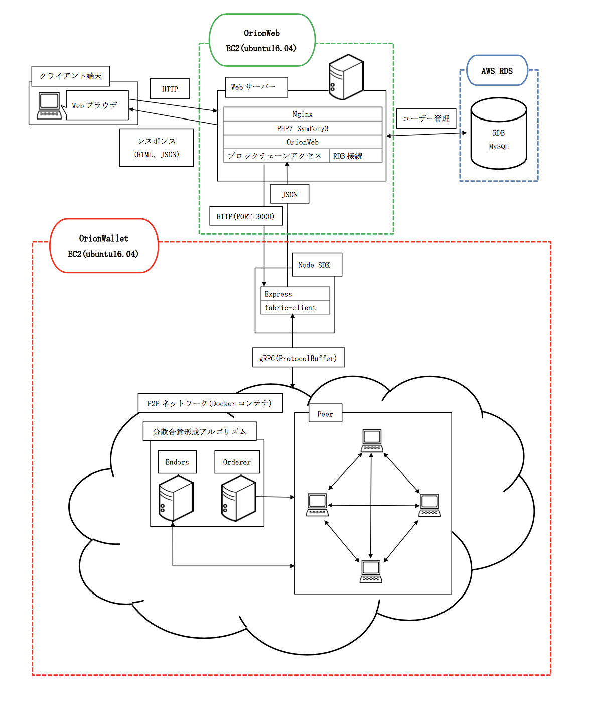
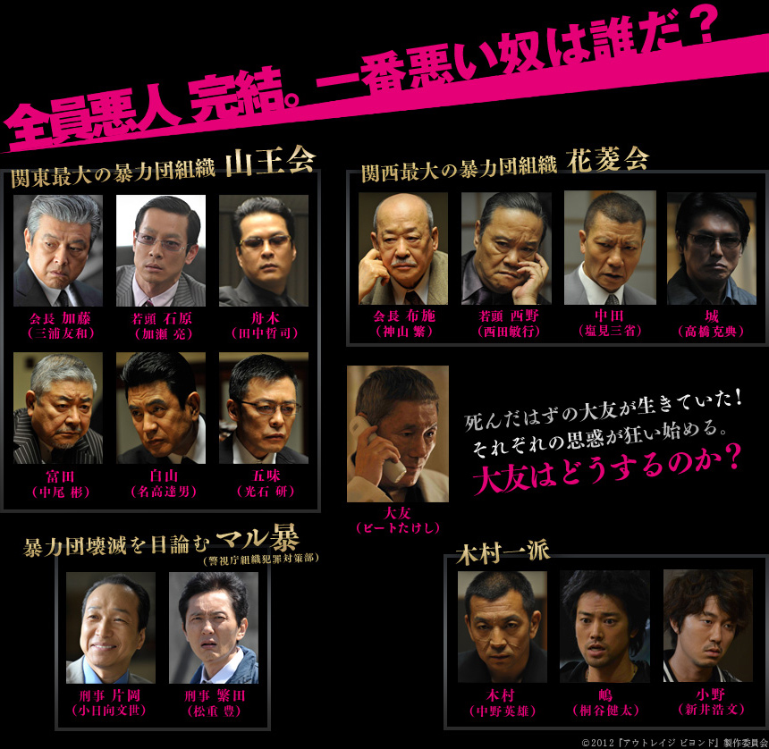

<!doctype html>
<html>
	<head>
		<meta charset="utf-8">
		<meta name="viewport" content="width=device-width, initial-scale=1.0, maximum-scale=1.0, user-scalable=no">

		<title>業務紹介 Lev. B</title>

		<link rel="stylesheet" href="css/reveal.css">
		<link rel="stylesheet" href="css/theme/league.css">

		<!-- Theme used for syntax highlighting of code -->
		<link rel="stylesheet" href="lib/css/zenburn.css">

		<style type="text/css">
		.reveal h1, .reveal h2, .reveal h3, .reveal h4, .reveal h5, .reveal h6 {
						text-transform: none;
		}

		.reveal pre code {
						max-height: 300px;
		}
		</style>

		<!-- Printing and PDF exports -->
		<script>
			var link = document.createElement( 'link' );
			link.rel = 'stylesheet';
			link.type = 'text/css';
			link.href = window.location.search.match( /print-pdf/gi ) ? 'css/print/pdf.css' : 'css/print/paper.css';
			document.getElementsByTagName( 'head' )[0].appendChild( link );
		</script>
	</head>
	<body>
		<div class="reveal">
			<div class="slides">
				<section data-transition="cube" data-markdown data-separator="^\n---$" data-separator-vertical="^\n>>>$">
					<script type="text/template">


### 業務紹介

* 社員番号:207
* 所属:企画室
* 名前:富永遼太

---
#### アジェンダ

1. #### 自己紹介
1. #### メイン業務の紹介
  1. #### 主にやったこと
  1. #### 苦労した点
  1. #### 良かった点
1. #### 業務を通して

---

## 自己紹介

* 名前:富永遼太
* 所属:企画室
* 趣味:映画鑑賞、読書、デッドリフト
<!-- 今年のtop3発表してもいいかも-->

---
## メイン業務

* tBCシステム化
* 実装担当(チェーンコード)

>>>
### Hyperledger Fabricとは

* 分散型台帳システムの基盤技術
* コンソーシアム型ネットワーク(B2B)
* デフォルトでの通貨機能はもたない
* PoWやマイニングは存在しない

>>>
## 実装

* ブロックチェーンの基幹部
	* Hyperledger Fabric
	* チェーンコード(Go)
	* SDK開発

* Webアプリ
	* コントローラ部

* サーバ構築

>>>


>>>
## 苦労した点

* 手探りでの開発
* Go言語, Node.js, Rails, Docker と未経験づくし
* PHP → Ruby on Rails
* 機能追加に伴うバグ対応

>>>
#### 良かった点

* チーム構成
	* <span style="font-size:32px">アルバイト時代〜新人教育で関わっているメンバー</span>

   

>>>
* 自由度が高い

* トレンド技術に触れられた<!-- ブロックチェーンやっていると友達にかっこつけられる-->

* ブロックチェーン勉強会の実施<!-- 定期的なアウトプット機会を得られる-->

---

## 成長した点

* 3度のサーバー構築
* セキュリティ/ネットワーク周りの理解が深まった<!-- 基本情報のような丸呑み型の勉強とは異なり-->
<br>
→ 技術者としての自覚
* チャレンジ精神<!-- 技術者としてのスキルが溜まった-->

>>>
## 改善したい点

* ムダのないコード
* 英語速読スキル<!-- IT用語の英語になれる-->

>>>
## 今後

* 目標
	* 「ブロックチェーン技術者です」
	* 「Hyperledger Fabricを用いて、分散型台帳システムを開発できます」
	<br>
	と言えるレベルになる

  * 社内にブロックチェーン技術を普及させる伝道師に...

>>>


					</script>
				</section>
			</div>
		</div>

		<script src="lib/js/head.min.js"></script>
		<script src="js/reveal.js"></script>

		<script>
			// More info about config & dependencies:
			// - https://github.com/hakimel/reveal.js#configuration
			// - https://github.com/hakimel/reveal.js#dependencies
			Reveal.initialize({
				history: true,
				overview: true,
				slideNumber: true,
				transition: 'cube',
				viewDistance: 3,

				dependencies: [
					{ src: 'plugin/markdown/marked.js' },
					{ src: 'plugin/markdown/markdown.js' },
					{ src: 'plugin/notes/notes.js', async: true },
					{ src: 'plugin/highlight/highlight.js', async: true, callback: function() { hljs.initHighlightingOnLoad(); } }
				]
			});
		</script>
	</body>
</html>
